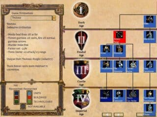
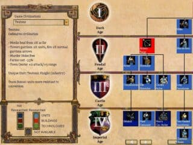

Age of Empires II (1999)
Age of Empires II: The Age of Kings es un videojuego de estrategia en tiempo real está ambientado en la Edad Media y contiene trece civilizaciones jugables. Los jugadores tienen como objetivo reunir recursos, que utilizan para construir ciudades, crear ejércitos y derrotar a sus enemigos. Hay cinco campañas basadas en la historia, que reclutan al jugador en condiciones especializadas respaldadas por la historia, así como tres modos de juego para un solo jugador adicionales; también se admite el modo multijugador.